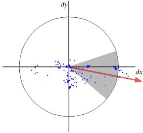

Introduction to SURF (Speeded-Up Robust Features)
Goal
In this chapter,
- We will see the basics of SURF
- We will see SURF functionalities in OpenCV
Theory
In last chapter, we saw SIFT for keypoint detection and description. But it was comparatively slow and people needed more speeded-up version. In 2006, three people, Bay, H., Tuytelaars, T. and Van Gool, L, published another paper, “SURF: Speeded Up Robust Features” which introduced a new algorithm called SURF. As name suggests, it is a speeded-up version of SIFT.
In SIFT, Lowe approximated Laplacian of Gaussian with Difference of Gaussian for finding scale-space. SURF goes a little further and approximates LoG with Box Filter. Below image shows a demonstration of such an approximation. One big advantage of this approximation is that, convolution with box filter can be easily calculated with the help of integral images. And it can be done in parallel for different scales. Also the SURF rely on determinant of Hessian matrix for both scale and location.

For orientation assignment, SURF uses wavelet responses in horizontal and vertical direction for a neighbourhood of size 6s. Adequate guassian weights are also applied to it. Then they are plotted in a space as given in below image. The dominant orientation is estimated by calculating the sum of all responses within a sliding orientation window of angle 60 degrees. Interesting thing is that, wavelet response can be found out using integral images very easily at any scale. For many applications, rotation invariance is not required, so no need of finding this orientation, which speeds up the process. SURF provides such a functionality called Upright-SURF or U-SURF. It improves speed and is robust upto \(\pm 15^{\circ}\). OpenCV supports both, depending upon the flag, upright. If it is 0, orientation is calculated. If it is 1, orientation is not calculated and it is more faster.
For feature description, SURF uses Wavelet responses in horizontal and vertical direction (again, use of integral images makes things easier). A neighbourhood of size 20sX20s is taken around the keypoint where s is the size. It is divided into 4x4 subregions. For each subregion, horizontal and vertical wavelet responses are taken and a vector is formed like this, \(v=( \sum{d_x}, \sum{d_y}, \sum{|d_x|}, \sum{|d_y|})\). This when represented as a vector gives SURF feature descriptor with total 64 dimensions. Lower the dimension, higher the speed of computation and matching, but provide better distinctiveness of features.
For more distinctiveness, SURF feature descriptor has an extended 128 dimension version. The sums of \(d_x\) and \(|d_x|\) are computed separately for \(d_y < 0\) and \(d_y \geq 0\). Similarly, the sums of \(d_y\) and \(|d_y|\) are split up according to the sign of \(d_x\), thereby doubling the number of features. It doesn’t add much computation complexity. OpenCV supports both by setting the value of flag extended with 0 and 1 for 64-dim and 128-dim respectively (default is 128-dim)
Another important improvement is the use of sign of Laplacian (trace of Hessian Matrix) for underlying interest point. It adds no computation cost since it is already computed during detection. The sign of the Laplacian distinguishes bright blobs on dark backgrounds from the reverse situation. In the matching stage, we only compare features if they have the same type of contrast (as shown in image below). This minimal information allows for faster matching, without reducing the descriptor’s performance.

In short, SURF adds a lot of features to improve the speed in every step. Analysis shows it is 3 times faster than SIFT while performance is comparable to SIFT. SURF is good at handling images with blurring and rotation, but not good at handling viewpoint change and illumination change.
SURF in OpenCV
OpenCV provides SURF functionalities just like SIFT. You initiate a SURF object with some optional conditions like 64/128-dim descriptors, Upright/Normal SURF etc. All the details are well explained in docs. Then as we did in SIFT, we can use SURF.detect(), SURF.compute() etc for finding keypoints and descriptors.
First we will see a simple demo on how to find SURF keypoints and descriptors and draw it. All examples are shown in Python terminal since it is just same as SIFT only.
>>> img = cv2.imread('fly.png',0) # Create SURF object. You can specify params here or later. # Here I set Hessian Threshold to 400 >>> surf = cv2.xfeatures2d.SURF_create(400) # Find keypoints and descriptors directly >>> kp, des = surf.detectAndCompute(img,None) >>> len(kp) 699
1199 keypoints is too much to show in a picture. We reduce it to some 50 to draw it on an image. While matching, we may need all those features, but not now. So we increase the Hessian Threshold.
# Check present Hessian threshold >>> print( surf.getHessianThreshold() ) 400.0 # We set it to some 50000. Remember, it is just for representing in picture. # In actual cases, it is better to have a value 300-500 >>> surf.setHessianThreshold(50000) # Again compute keypoints and check its number. >>> kp, des = surf.detectAndCompute(img,None) >>> print( len(kp) ) 47
It is less than 50. Let’s draw it on the image.
>>> img2 = cv2.drawKeypoints(img,kp,None,(255,0,0),4) >>> plt.imshow(img2),plt.show()
See the result below. You can see that SURF is more like a blob detector. It detects the white blobs on wings of butterfly. You can test it with other images.

Now I want to apply U-SURF, so that it won’t find the orientation.
# Check upright flag, if it False, set it to True >>> print( surf.getUpright() ) False >>> surf.setUpright(True) # Recompute the feature points and draw it >>> kp = surf.detect(img,None) >>> img2 = cv2.drawKeypoints(img,kp,None,(255,0,0),4) >>> plt.imshow(img2),plt.show()
See the results below. All the orientations are shown in same direction. It is more faster than previous. If you are working on cases where orientation is not a problem (like panorama stitching) etc, this is better.

Finally we check the descriptor size and change it to 128 if it is only 64-dim.
# Find size of descriptor >>> print( surf.descriptorSize() ) 64 # That means flag, "extended" is False. >>> surf.getExtended() False # So we make it to True to get 128-dim descriptors. >>> surf.extended = True >>> kp, des = surf.detectAndCompute(img,None) >>> print( surf.descriptorSize() ) 128 >>> print( des.shape ) (47, 128)
Remaining part is matching which we will do in another chapter.
Additional Resources
Exercises